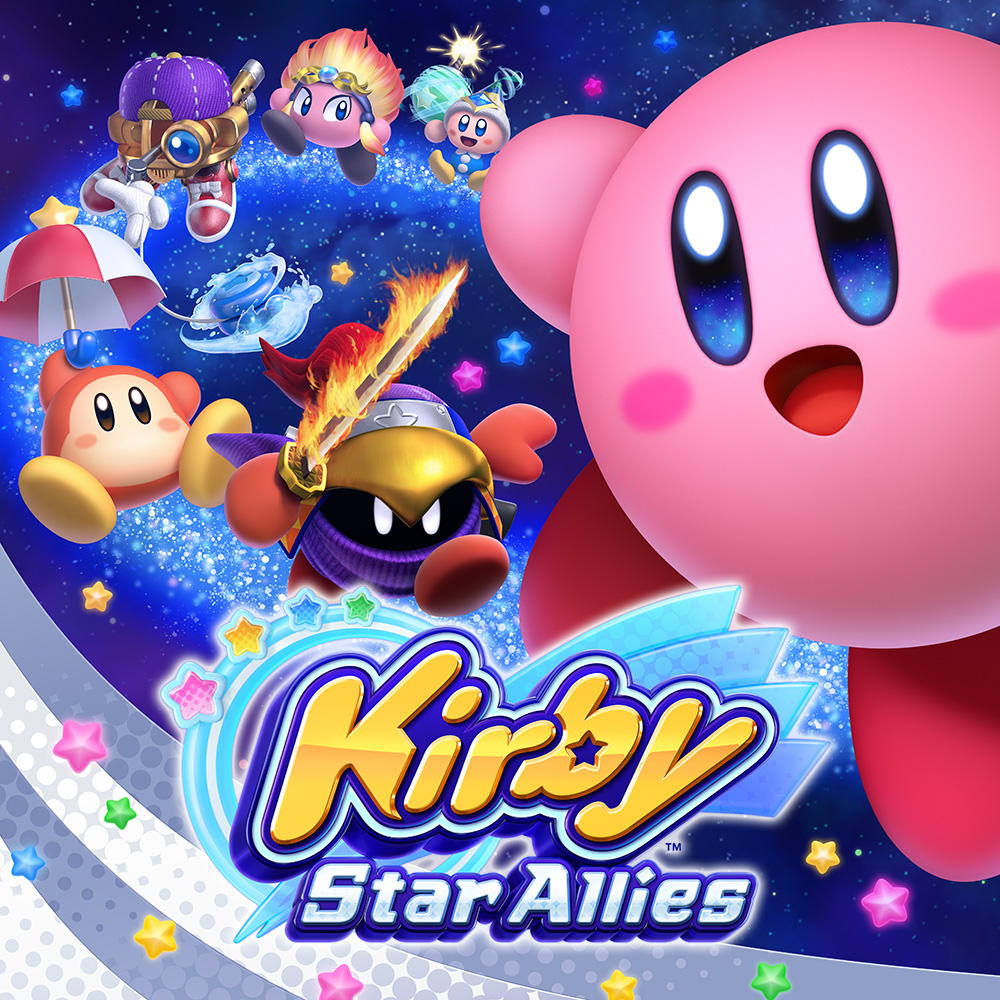

Kirby Star Allies
Quando fragmentos de um coração sombrio caem em Popstar, Kirby ganha o poder de
fazer aliados jogando corações. Com ajuda de novos amigos, ele parte numa missão pra
salvar o mundo das garras do culto liderado por Hyness e suas generais. O jogo combina ação
cooperativa e poderes combináveis em fases coloridas e cheias de desafio além de dar a oportunidade de o jogador recrutar os inimigos.
Formas
| Forma | Habilidades | Modo de obtenção |
|---|---|---|
 |
Kirby utiliza uma vassoura para varrer e atacar inimigos próximos, criando nuvens de poeira que causam dano. Alguns ataques invocam amigos animais de Kirby's Dream Land 3, como Nago, Pitch e ChuChu, para auxiliar nos golpes. |
Engula o inimigo Broom Hatter, encontrado em várias fases do jogo. Isso concede a habilidade Cleaning. |
 |
Kirby cria teias que aprisionam inimigos, permitindo que sejam chutados ou arremessados contra outros adversários. As teias também podem ser usadas para realizar o Friend Bounce, onde aliados saltam sobre elas para alcançar áreas mais altas. |
Engula o inimigo Como, encontrado em várias fases do jogo. Isso concede a habilidade Spider. |
 |
Kirby lança jatos de água que seguem o chão, atingindo inimigos à distância. Ele também pode surfar em uma onda, atravessando lava e outros terrenos perigosos. |
Engula o inimigo Driblee, encontrado em várias fases. Isso concede a habilidade Water. |
 |
Kirby usa um chifre de besouro para atacar e perfurar obstáculos. Ele pode agarrar inimigos com o chifre e jogá-los contra outros. |
Engula o inimigo Beetley, encontrado em várias fases. Isso concede a habilidade Beetle. |